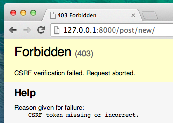

Formulaires Django
La dernière chose que nous voulons faire sur notre site web, c'est créer une manière sympathique d'ajouter ou d'éditer des blog posts. L'interface d'administration de Django est cool, mais elle est assez complexe à personnaliser et à rendre jolie. Les formulaires vont nous donner un pouvoir absolu sur notre interface : nous allons être capables de faire à peu près tout ce que nous pouvons imaginer !
Ce qui est pratique avec les formulaires Django, c'est que nous pouvons aussi bien en définir un à partir de rien ou créer un ModelForm qui va enregistrer le résultat du formulaire dans un modèle.
C'est la seconde solution que nous allons utiliser pour créer un formulaire pour notre modèle Post.
Comme toutes les choses importantes dans Django, les formulaires ont leur propre fichier : forms.py.
Nous allons devoir créer un fichier avec ce nom dans notre dossier blog.
blog
└── forms.py
Ouvrez maintenant ce fichier et tapez le code suivant :
from django import forms
from .models import Post
class PostForm(forms.ModelForm):
class Meta:
model = Post
fields = ('title', 'text',)
Nous avons besoin tout d'abord d'importer les formulaires Django (from django import forms), puis, évidemment, notre modèle Post (from .models import Post).
Comme vous l'avez probablement deviné, PostForm est le nom de notre formulaire. Nous avons besoin de préciser à Django que ce formulaire est un ModelForm. Pour cela, nous utilisons forms.ModelForm.
Ensuite, nous avons une Meta Classe qui nous permet de dire à Django quel modèle il doit utiliser pour créer ce formulaire (model = Post).
Enfin, nous précisions quels sont le⋅s champ⋅s qui doivent figurer dans notre formulaire. Dans notre cas, nous souhaitons que seuls title et text apparaissent dans notre formulaire. Nous obtiendrons les autres données différemment : par exemple, on s'attend à ce que l'auteur (author) soit la personne actuellement enregistrée (c'est à dire vous !) et que la date de création created_date soit générée automatiquement lors de la création du post (cf code que nous avons écrit).
Et voilà, c'est tout ! Tout ce qu'il nous reste à faire, c'est d'utiliser ce formulaire dans une vue et de l'afficher dans un template.
Nous allons donc une nouvelle fois suivre le processus suivant et créer : un lien vers la page, une URL, une vue et un template.
Lien vers une page contenant le formulaire
C'est le moment d'ouvrir le fichier blog/templates/blog/base.html. Nous allons ajouter un lien dans un div appelé page-header :
<a href="{% url 'post_new' %}" class="top-menu"><span class="glyphicon glyphicon-plus"></span></a>
Remarquez que notre nouvelle vue s'appelle post_new.
Après avoir ajouté cette ligne, votre fichier html devrait maintenant ressembler à ceci :
{% load static %}
<html>
<head>
<title>Django Girls blog</title>
<link rel="stylesheet" href="//maxcdn.bootstrapcdn.com/bootstrap/3.2.0/css/bootstrap.min.css">
<link rel="stylesheet" href="//maxcdn.bootstrapcdn.com/bootstrap/3.2.0/css/bootstrap-theme.min.css">
<link href='//fonts.googleapis.com/css?family=Lobster&subset=latin,latin-ext' rel='stylesheet' type='text/css'>
<link rel="stylesheet" href="{% static 'css/blog.css' %}">
</head>
<body>
<div class="page-header">
<a href="{% url 'post_new' %}" class="top-menu"><span class="glyphicon glyphicon-plus"></span></a>
<h1><a href="/">Django Girls Blog</a></h1>
</div>
<div class="content container">
<div class="row">
<div class="col-md-8">
{% block content %}
{% endblock %}
</div>
</div>
</div>
</body>
</html>
Sauvegardez votre fichier et rafraichissez la page http://127.0.0.1:8000 : vous devez normalement tomber encore une fois sur l'erreur NoReverseMatch !
URL
Ouvrez le fichier blog/urls.py et ajoutez cette ligne :
url(r'^post/new/$', views.post_new, name='post_new'),
Votre fichier doit maintenant ressembler à ceci :
from django.conf.urls import url
from . import views
urlpatterns = [
url(r'^$', views.post_list, name='post_list'),
url(r'^post/(?P<pk>[0-9]+)/$', views.post_detail, name='post_detail'),
url(r'^post/new/$', views.post_new, name='post_new'),
]
Une fois la page rechargée, vous allez voir une AttributeError, ce qui est normal. Nous n'avons pas encore implémentée la vue post_new. Allons nous occuper de ça maintenant.
La vue post_new
Ouvrez maintenant le fichier blog/views.py et ajoutez les lignes suivantes avec celles du from qui existent déjà :
from .forms import PostForm
Puis ajoutez la vue :
def post_new(request):
form = PostForm()
return render(request, 'blog/post_edit.html', {'form': form})
Afin de pouvoir créer un nouveau formulaire Post, nous avons besoin d'appeler la fonction PostForm() et de la passer au template. Nous reviendrons modifier cette vue plus tard, mais pour l'instant, créons rapidement un template pour ce formulaire.
Template
Pour cela, nous avons besoin de créer un fichier post_edit.html dans le dossier blog/templates/blog. Afin que notre formulaire fonctionne, nous avons besoin de plusieurs choses :
- Nous voulons afficher le formulaire. Nous pouvons le faire à l'aide d'un simple
{{ form.as_p }}par exemple. - La ligne précédente va avoir besoin d'être enveloppée dans des balises HTML :
<form method="POST">...</form> - Nous avons besoin d'un bouton
Save (sauvegarder). Nous allons le créer à l'aide d'un bouton HTML :<button type="submit">Save</button> - Enfin, nous devons ajouter
{% csrf_token %}juste après<form ...>. C'est très important car c'est ce qui va permettre de sécuriser votre formulaire ! De toute manière, si vous avez oublié ce petit morceau, Django vous le fera remarquer lorsque vous sauvegarderez le formulaire :

Ok, voyons maintenant à quoi devrait ressembler le fichier post_edit.html :
{% extends 'blog/base.html' %}
{% block content %}
<h1>New post</h1>
<form method="POST" class="post-form">{% csrf_token %}
{{ form.as_p }}
<button type="submit" class="save btn btn-default">Save</button>
</form>
{% endblock %}
Rafraichissons la page ! Et voilà : le formulaire s'affiche !

Heu, attendez une minute... Quand vous tapez quelque chose dans title et text et que vous essayez de le sauvegarder, que se passe-t-il ?
Absolument rien ! Nous retombons sur la même page sauf qu'en plus, notre texte a disparu et aucun post ne semble avoir été créé. Que s'est-il passé ?
La réponse est : rien ! Nous avons juste encore un peu de travail à accomplir. Retournons à notre vue.
Sauvegarder le contenu du formulaire
Ouvrez à nouveau blog/views.py. Actuellement, post_new n'est composé que des lignes de code suivantes :
def post_new(request):
form = PostForm()
return render(request, 'blog/post_edit.html', {'form': form})
Lorsque nous envoyons notre formulaire, nous revenons à la même vue. Cependant, nous avons des données dans request, et plus particulièrement dans request.POST. Prenez garde que "POST" ici n'a aucun lien avec "blog post" : le nom est lié au fait que nous envoyons des données. Rappelez-vous : nous avions défini la variable method="POST" dans le fichier HTML qui contient notre <formulaire> ? Tous les champs du formulaire se trouvent maintenant dans request.POST. Veillez à ne pas renommer POST en quoi que ce soit d'autre : la seule autre valeur autorisée pour method est GET. Malheureusement, nous n'avons pas le temps de rentrer dans les détails aujourd'hui.
Dans notre vue, nous avons donc deux situations différentes à gérer. Tout d'abord, nous avons la situation où nous accédons à la page pour la première fois et que nous voulons un formulaire vide. Ensuite, nous avons la seconde situation où nous retournons sur la vue et nous voulons que les champs du formulaire contiennent les informations que nous avions tapées. Pour gérer ces deux cas, nous allons utiliser une condition if (si).
if request.method == "POST":
[...]
else:
form = PostForm()
Attaquons-nous à remplir ces [...]. Si la method est POST, c'est que nous voulons construire notre PostForm avec les données de notre formulaire. Pour cela, nous devons ajouter :
form = PostForm(request.POST)
Facile ! La prochaine étape est de vérifier si le contenu de notre formulaire est correct. Nous aimerions vérifier, par exemple, que les champs obligatoires soient bien remplis et qu'aucune donnée incorrecte ne soit sauvegardée. Pour cela, nous allons utiliser form.is_valid().
Testons donc si notre formulaire est valide et, si c'est le cas, sauvegardons-le !
if form.is_valid():
post = form.save(commit=False)
post.author = request.user
post.published_date = timezone.now()
post.save()
En gros, nous effectuons deux choses ici : nous sauvegardons le formulaire grâce à form.save et nous ajoutons un auteur. Rappelez-vous, il n'y avait pas de champ author dans le PostForm mais nous avons obligatoirement besoin d'un auteur pour que le formulaire que nous avons créé soit valide. commit=False signifie que nous ne voulons pas encore enregistrer notre modèle Post. Nous voulons tout d'abord ajouter un auteur. La plupart du temps, vous utiliserez form.save() sans commit=False. Cependant, nous en avons besoin ici. post.save() va nous permettre de sauvegarder les changements, c'est-à-dire l'ajout d'un auteur. Et voilà, maintenant c'est sûr, un nouveau blog post sera créé !
Enfin, ce serait génial si nous pouvions tout de suite aller à la page post_detail du post de blog que nous venons de créer. Pour cela, nous avons besoin d'importer une dernière chose :
from django.shortcuts import redirect
Ajoutez-le au tout début de votre page. Maintenant, nous allons ajouter la ligne qui signifie : "aller à la page post_detail pour le nouveau post qui vient d'être créé".
return redirect('post_detail', pk=post.pk)
post_detail est le nom de la vue où nous voulons aller. Rappelez-vous : une vue a besoin d'une variable pk. Afin de le passer à la vue, nous utilisons pk=post.pk, où post désigne le blog post nouvellement créé !
Et si au lieu de parler, nous vous montrions à quoi ressemble maintenant notre vue ?
def post_new(request):
if request.method == "POST":
form = PostForm(request.POST)
if form.is_valid():
post = form.save(commit=False)
post.author = request.user
post.published_date = timezone.now()
post.save()
return redirect('post_detail', pk=post.pk)
else:
form = PostForm()
return render(request, 'blog/post_edit.html', {'form': form})
Voyons si ça marche. Allez à l'adresse http://127.0.0.1:8000/post/new/, ajoutez un titre et du texte, puis sauvegardez... Et voilà ! Le nouveau post est bien créé et vous êtes redirigé vers la page post_detail !
Vous avez peut-être remarqué que nous avons choisi une date de publication avant de sauvegarder le post. Nous en aurons besoin lorsque nous créerons le publish button (bouton publier) dans l'un des extensions du tutoriel Django Girls (en anglais).
Encore bravo !
Validation de formulaire
Maintenant, nous allons vous montrer à quel point les formulaires Django sont cools ! Un post de blog a besoin de champs title (titre) et text (texte). Dans notre modèle Post, nous n'avons pas signalé que ces champs n'étaient pas obligatoire (à l'inverse de published_date). Django s'attend donc à ce qu'ils soient remplis à chaque fois.
Essayez de sauvegarder un formulaire sans mettre de titre ou de texte. Devinez ce qui va se passer !

Django va s'occuper de la validation : il va regarder si tous les champs de notre formulaire sont en adéquation avec notre modèle. C'est cool, non ?
Comme nous avons récemment utilisé l'interface d'administration de Django, le système pense que nous sommes encore connectés. Cependant, il y a plusieurs cas qui peuvent amener un utilisateur à être déconnecté : fermer le navigateur, redémarrer la base de données, etc. Si jamais vous obtenez des erreurs lors de la création d'un post qui disent que vous n'êtes pas connecté, retournez sur la page d'administration présente à l'adresse http://127.0.0.1:8000/admin et connectez-vous à nouveau. Cependant, vous devinez bien que cette solution n'est pas suffisante à long terme. Afin de corriger ce problème, n'hésitez pas à faire la partie Devoir : ajouter de la sécurité à son site internet ! qui est située juste après la partie principale du tutoriel.

Éditer un formulaire
Maintenant, nous savons comme ajouter un nouveau formulaire. Comment faire si nous voulons éditer un formulaire déjà existant ? C'est assez proche de ce que nous venons de faire. Créons ce dont nous avons besoin rapidement. Si jamais des choses vous semblent obscures, n'hésitez pas à demander à votre coach ou à revoir les chapitres précédents. Tout ce que nous allons faire maintenant a déjà été expliqué plus en détail précédemment.
Ouvrez le fichier blog/templates/blog/post_detail.html et ajoutez la ligne suivante :
<a class="btn btn-default" href="{% url 'post_edit' pk=post.pk %}"><span class="glyphicon glyphicon-pencil"></span></a>
Votre template doit ressembler à ceci :
{% extends 'blog/base.html' %}
{% block content %}
<div class="post">
{% if post.published_date %}
<div class="date">
{{ post.published_date }}
</div>
{% endif %}
<a class="btn btn-default" href="{% url 'post_edit' pk=post.pk %}"><span class="glyphicon glyphicon-pencil"></span></a>
<h1>{{ post.title }}</h1>
<p>{{ post.text|linebreaksbr }}</p>
</div>
{% endblock %}
Maintenant, dans blog/urls.py, ajoutez cette ligne :
url(r'^post/(?P<pk>[0-9]+)/edit/$', views.post_edit, name='post_edit'),
Nous allons réutiliser le template de blog/templates/blog/post_edit.html. Il ne va donc nous manquer qu'une vue.
Ouvrons blog/views.py et ajoutons à la toute fin du fichier :
def post_edit(request, pk):
post = get_object_or_404(Post, pk=pk)
if request.method == "POST":
form = PostForm(request.POST, instance=post)
if form.is_valid():
post = form.save(commit=False)
post.author = request.user
post.published_date = timezone.now()
post.save()
return redirect('post_detail', pk=post.pk)
else:
form = PostForm(instance=post)
return render(request, 'blog/post_edit.html', {'form': form})
Vous ne trouvez pas que ça ressemble presque à la vue de post_new ? Regardons un peu plus en détail. Tout d'abord, nous passons un paramètre pk supplémentaire. Ensuite, nous récupérons le modèle Post que nous souhaitons éditer à l'aide de get_object_or_404(Post, pk=pk). Puis, lorsque nous créons un formulaire, nous faisons de ce post deux instances. Tout d'abord lorsque nous sauvegardons le formulaire :
form = PostForm(request.POST, instance=post)
Puis ensuite lorsque nous ouvrons le formulaire associé à ce post afin de l'éditer :
form = PostForm(instance=post)
Alors, voyons si ça marche ! Allons à la page post_detail. Un bouton d'édition devrait apparaitre dans le coin supérieur droit de la page :
Lorsque vous cliquez dessus, vous devez voir le formulaire du post de blog apparaitre :

Essayez de manipuler un peu ce que vous venez de créer : ajoutez du texte, changez le titre puis sauvegardez ces changements !
Bravo ! Votre application se complexifie et contient de plus en plus de fonctionnalités !
Si jamais vous voulez en savoir plus sur les formulaires dans Django, n'hésitez pas à lire la documentation associée : https://docs.djangoproject.com/fr/1.11/topics/forms/
Sécurité
C’est génial de pouvoir créer de nouveaux posts juste en cliquant sur un lien ! Mais n’importe qui visitant votre site pourra mettre un nouveau post en ligne, ce qui n’est probablement pas ce que vous souhaitez. Faisons en sorte que le bouton n’apparaisse seulement qu'à vous.
Dans blog/templates/blog/base.html, trouvez notre page-header div et la balise ancre que vous y avez mis plus tôt. Ça doit ressembler à ça :
<a href="{% url 'post_new' %}" class="top-menu"><span class="glyphicon glyphicon-plus"></span></a>
On va y ajouter une autre balise {% if %} qui ne fera apparaitre le lien qu’aux utilisateurs⋅trices connecté⋅e⋅s dans l’administration : uniquement vous pour le moment ! Changez la balise <a> comme ceci :
{% if user.is_authenticated %}
<a href="{% url 'post_new' %}" class="top-menu"><span class="glyphicon glyphicon-plus"></span></a>
{% endif %}
Ce {% if %} fait en sorte de n’envoyer le lien au navigateur que si l’utilisateur⋅trice demandant la page est connecté⋅e. Ce n’est pas une protection complète, mais c’est un bon début. Nous reviendrons sur les questions de sécurité dans les extensions du tutoriel.
Comme vous êtes probablement connectée, vous ne verrez aucune différence si vous rafraichissez la page. Mais chargez la page dans un autre navigateur ou dans une fenêtre incognito, et vous verrez que le lien n’apparait pas !
Encore un petit effort : déployons !
Nos modifications fonctionnent-elles sur PythonAnywhere ? Pour le savoir, déployons à nouveau !
Tout d'abord, commitez votre nouveau code et pushez-le à nouveau sur GitHub
$ git status $ git add --all . $ git status $ git commit -m "Ajout de vues qui permettent de créer et d'éditer un post de blog sur le site." $ git pushPuis, dans la console bash de PythonAnywhere:
$ cd my-first-blog
$ source myvenv/bin/activate
(myvenv)$ git pull
[...]
(myvenv)$ python manage.py collectstatic
[...]
- Enfin, cliquez sur l'onglet Web et cliquez sur Reload.
Normalement, ça devrait suffire ! Encore bravo :)